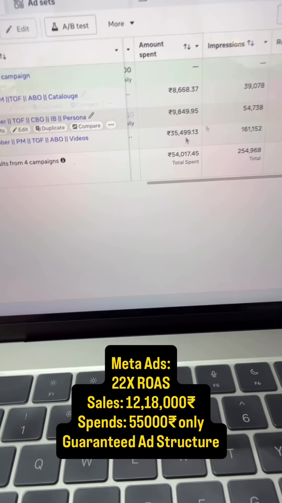

Executive Summary
In Indian D2C and emerging-market e-commerce, Cash on Delivery (COD) typically accounts for 60–80% of orders but carries catastrophic Return to Origin (RTO) rates of 20–35%, eroding margins through reverse logistics, damaged packaging, and locked inventory.
This case study breaks down a proven Meta Ads campaign architecture that generated ₹12.18 Lakhs in revenue from ₹54,017 in ad spend (22.5X ROAS) with 100% prepaid orders and zero COD/RTO losses.
The core operational shift is twofold:
- Stop Scaling Purely on Blended ROAS: Scale decisions are governed by funnel health metrics (Hook Rate, Hold Rate, First-Time Impression Ratio, Bounce Rate, and LTV:CAC).
- The 18-Format ABO Isolation Matrix: Systematically decoupling Creative Format (Static, Video, Carousel), Hook Variations, and Landing Page Destinations (CLP vs. PDP) inside an Ad Set Budget Optimization (ABO) campaign structure.
Visual Proof & Architectural Schematics

The 18-Format ABO Architecture
To prevent Meta's machine learning algorithm from prematurely starving unproven creative formats (which happens inside CBO/Advantage+ campaigns), testing is strictly isolated in an ABO (Ad Set Budget Optimization) structure with open/broad demographic targeting:
ABO Campaign (Open Audience: Target Gender, Age 24–54, No Narrow Interests)
│
├── Destination: Collection Landing Page (CLP)
│ ├── AdSet 1 [Static]: Hook 1 (H1) | Hook 2 (H2) | Hook 3 (H3)
│ ├── AdSet 2 [Video]: Hook 1 (H1) | Hook 2 (H2) | Hook 3 (H3)
│ └── AdSet 3 [Carousel]: Hook 1 (H1) | Hook 2 (H2) | Hook 3 (H3)
│
└── Destination: Product Detail Page (PDP)
├── AdSet 4 [Static]: Hook 1 (H1) | Hook 2 (H2) | Hook 3 (H3)
├── AdSet 5 [Video]: Hook 1 (H1) | Hook 2 (H2) | Hook 3 (H3)
└── AdSet 6 [Carousel]: Hook 1 (H1) | Hook 2 (H2) | Hook 3 (H3)The 6 Non-Negotiable Metric Health Benchmarks
Most media buyers increase budgets when ROAS looks high in the first 48 hours, only to suffer immediate margin collapse as the audience saturates. Scale budgets only when the underlying creative and funnel ratios meet these thresholds:
| Funnel Metric | Target Threshold | Diagnostic Formula & Significance |
|---|---|---|
| Hook Rate | > 40.0% |
3-Second Video Plays / Total Impressions. Measures initial scroll-stopping velocity. If <40%, rewrite opening frame and caption typography. |
| Hold Rate | > 35.0% |
ThruPlays (15s) / 3-Second Video Plays. Validates whether value proposition and product demonstration retain viewer interest. |
| First-Time Impression Ratio (FTIR) | > 60.0% |
First-Time Impressions / Total Impressions. Confirms broad algorithm is reaching new prospects rather than repeatedly pinging recent viewers. |
| Landing Page Bounce Rate | < 45.0% |
Percentage of visitors leaving without interaction. Indicates mobile load speed (<2s) and message match between creative and product headline. |
| New Customer Acquisition % | > 80.0% |
Share of orders from first-time buyers. Guarantees top-of-funnel ads are acquiring new market share rather than cannibalizing existing brand search. |
| LTV:CAC Ratio | > 3.0 : 1 |
Lifetime Value over 90 days divided by Customer Acquisition Cost. Ensures scale is economically viable when factoring payment gateway fees and packaging. |
Enforcing 100% Prepaid Orders Without Killing Conversion Rate
How did this campaign maintain high conversion velocity while completely disabling COD?
- Friction Inversion Incentive: Added a clear checkout incentive for UPI/Cards (e.g. "Extra 10% instant discount + Free Express Delivery on UPI/Card orders").
- Social Proof & COD Risk Communication: Embedded transparent shipping badges showing unboxing guarantees and 48-hour dispatch, eliminating buyer anxiety about upfront payment.
- Abandonment Recovery Funnel: Dispatched automated WhatsApp payment links offering a 5-minute reserved inventory window to users who dropped off at the payment step.
Key Takeaways for Media Buyers & Founders
- Isolate Creative Formats: Never mix video and static ads in the same AdSet during testing; Meta will allocate 85%+ of budget to video even if the static image delivers a lower cost per acquisition.
- Test CLP vs. PDP: Collection pages work best for discovery catalogs where buyers browse multiple variants; single PDPs win when scaling high-ticket hero SKUs.
- RTO is the Silent Margin Killer: A 5X ROAS with 30% RTO often loses money. A 4X ROAS with 100% prepaid orders generates pure cash flow.